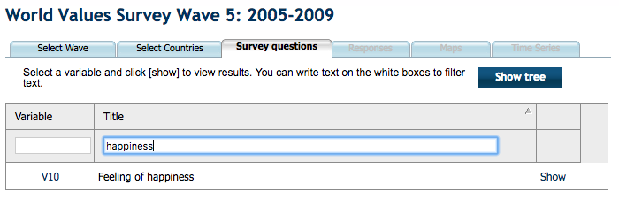
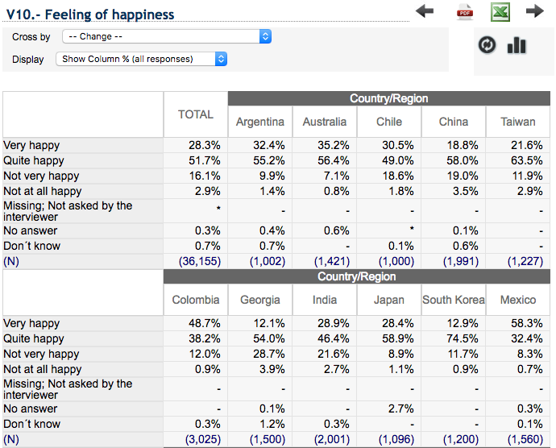
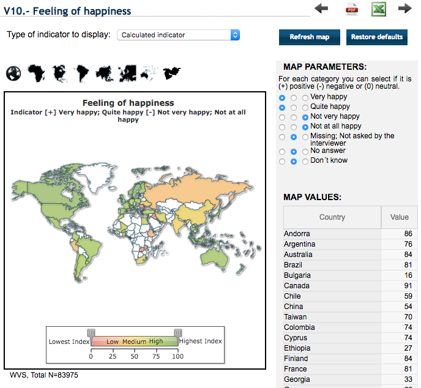
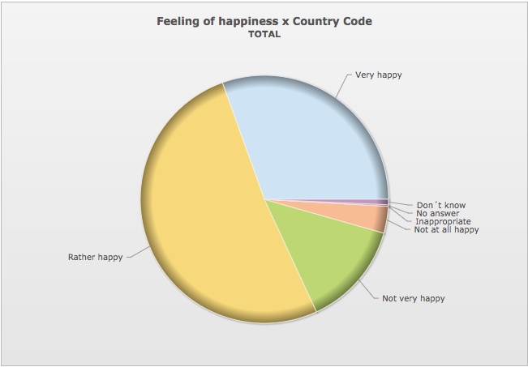
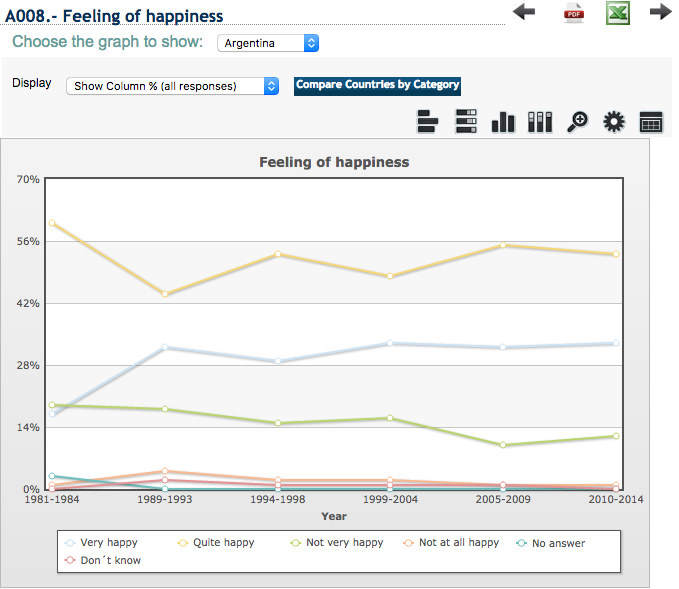
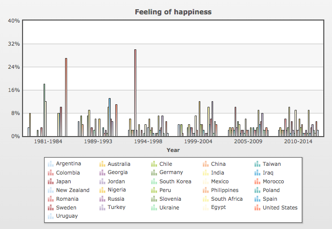
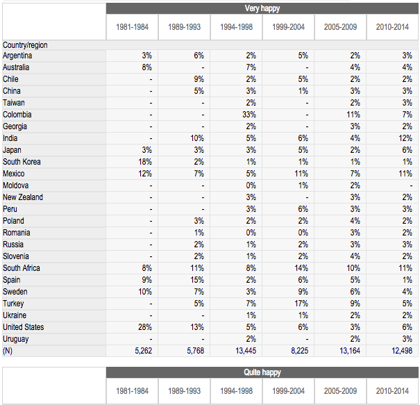
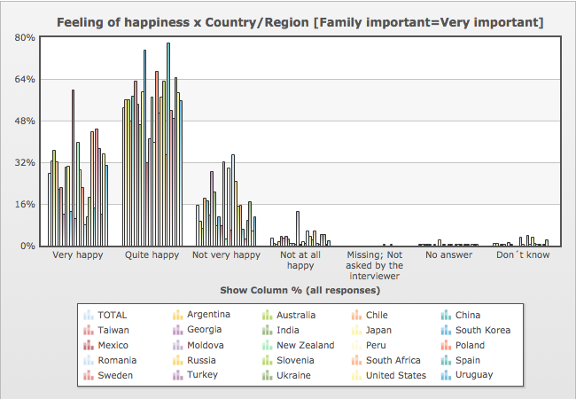
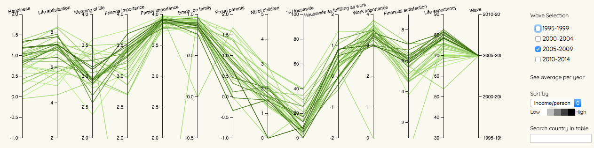
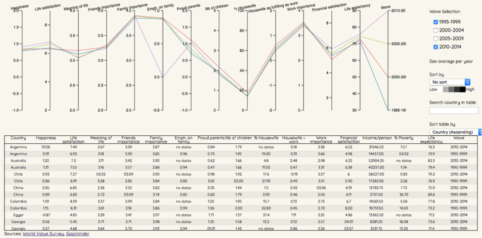

Analytic Trail 1
I am interested in knowing the influence of family on happiness.
World Value Survey allows you to look for datas for different « waves ».
Depending on the wave chosen, a list of countries to select shows up.
After selecting the countries I am interested in, I can select a subject, by filtering by variable or title.

The results can then be presented in tables or in graphics, with different options.



Feeling of happiness in 2010-2014 (WVS)
It is possible to view the details of answers of all countries throughout the years on tables.
The graphics offer the possibility to visualize either the answers of one country, or the evolution of one answer for all countries,
but to see the combination of both, I need to go back to the table.


% of "Very happy" (WVS)

It is possible to cross the results with another variable but the changes are not really visible.

Crossing variables (2005-2009) (WVS)
To make it easier for visualization, all the values of variables for all countries have been assembled into one file,
and all the variables are displayed using parallel coordinates, coupled with a table.
Analytic trail 2
Hovering on the table’s rows highlights the different curves related to the selected country, making it possible to see the changes throughout the years.
Brushing on the axis allows the selection of one particular interval of interest, and the table updates along.
Multibrushing on the axis also allows the comparison between different intervals. It can also be used to select waves rather than displaying the four of them.
The second iteration adds the possibility to actually take waves off the graph to allow for a clearer overview.
It is also possible search for a country in the table instead of scrolling throught it.
To go further into the question of the influence of family on happiness, the dimension of work is added for comparison.
In addition, a few variables from Gapminder have been added both as axes for a new element of comparison, and as a color dimension to the lines (income/person and % poverty), so the higher the darker.
It seems that the higher the income, the more happy one becomes.

Finally, the averages of each variables for the four waves have been added to show how the overall mentality evolved throughout the years.

Overall, it seems that as important as family is, it can affect happiness.
Learning
One difficulty of this was to incorporate the time factor and still keep a clear visualization of the different variables.
To go further, filling in the gaps in the values would improve the tool. For now, they are by default put to 0, making the visualization look weird.
However, it is still possible to draw some correlations with what is rendered.